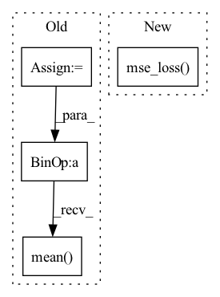

Pattern ID :1933

Before Change
)
_, encoding_indices = (-d).max(1)
encodings = F.one_hot(encoding_indices, self.num_tokens).type(z_flattened.dtype)
encoding_indices = encoding_indices.view(*z.shape[:-1])
z_q = self.embedding(encoding_indices)
avg_probs = torch.mean(encodings, dim=0)
perplexity = torch.exp(-torch.sum(avg_probs * torch.log(avg_probs + 1e-10)))
if self.training:
encodings_sum = encodings.sum(0)
embed_sum = z_flattened.transpose(0, 1) @ encodings
//EMA cluster size
self.embedding.cluster_size.data.mul_(self.decay).add_(encodings_sum, alpha=1 - self.decay)
//EMA embedding average
self.embedding.embed_avg.data.mul_(self.decay).add_(embed_sum, alpha=1 - self.decay)
//cluster size Laplace smoothing
n = self.embedding.cluster_size.sum()
cluster_size = (
(self.embedding.cluster_size + self.eps) / (n + self.num_tokens * self.eps) * n
)
//normalize embedding average with smoothed cluster size
embed_normalized = self.embedding.embed_avg / cluster_size.unsqueeze(0)
self.embedding.weight.data.copy_(embed_normalized)
loss = self.beta * (z_q.detach() - z).pow(2).mean()
z_q = z + (z_q - z).detach()
z_q = z_q.permute(0, 3, 1, 2).contiguous()
return z_q, loss, (perplexity, encodings, encoding_indices)
After Change
self.embedding.weight.data.copy_(embed_normalized.data)
// compute loss for embedding
loss = self.beta * F.mse_loss(z_q.detach(), z)
// preserve gradients
z_q = z + (z_q - z).detach()
In pattern: SUPERPATTERN
Frequency: 3
Non-data size: 4
Instances
Fragment ID: 13434223
Project Name: tgisaturday/dalle-lightning
Commit Name: f5fd383f3ac54b79f33c1ab36ae01f46ea06c6c7
Time: 2021-08-04
Author: jamesk1228@gmail.com
File Name: pl_dalle/modules/vqvae/quantize.py
M Class Name: EMAVectorQuantizer
N Class Name: EMAVectorQuantizer
M Method Name: forward(2)
N Method Name: forward(2)
M Parent Class: nn.Module
N Parent Class: nn.Module
M File Name: pl_dalle/modules/vqvae/quantize.py
N File Name: pl_dalle/modules/vqvae/quantize.py
M Start Line: 68
M End Line: 99
N Start Line: 131
N End Line: 164
'>
Before Change
loss = 0.0
for z, c, l, b in zip(latents, codebooks, logits, codes):
z = z.detach().permute(0, 2, 3, 1)
k = l.shape[-1]
soft = l @ c
softQE = F.mse_loss(soft, z)
oneHot = F.one_hot(b, k).float()
hard = oneHot @ c
hardQE = F.mse_loss(hard, z)
loss += (softQE + hardQE + 0.1 * F.mse_loss(hard, soft)).mean()
return loss
class CompressionLoss(nn.Module):
def forward(self, images, restored, codes, latents, logits, quantizeds, cv):
After Change
qe = F.mse_loss(z.detach(), zq, reduction="none").mean(axis=(0, 2))
commit = F.mse_loss(z, zq.detach(), reduction="none").mean(axis=(0, 2))
softQE = F.mse_loss(z.detach(), soft, reduction="none").mean(axis=(0, 2))
softCommit = F.mse_loss(z, soft.detach(), reduction="none").mean(axis=(0, 2))
// joint = F.mse_loss(soft, zq, reduction="none").mean(axis=(0, 2))
loss += qe + 0.01 * commit + 0.1 * (softQE + 0.01 * softCommit)
return loss
'>
Fragment ID: 13434213
Project Name: xiaosu-zhu/mcquic
Commit Name: 163d9bc5bb4d433d52358cf5c7abc5955136f574
Time: 2021-02-25
Author: xiaosu.zhu@outlook.com
File Name: src/mcqc/losses/structural.py
M Class Name: QError
N Class Name: QError
M Method Name: forward(4)
N Method Name: forward(5)
M Parent Class: nn.Module
N Parent Class: nn.Module
M File Name: src/mcqc/losses/structural.py
N File Name: src/mcqc/losses/structural.py
M Start Line: 11
M End Line: 21
N Start Line: 12
N End Line: 19
'>
Before Change
)
_, encoding_indices = (-d).max(1)
encodings = F.one_hot(encoding_indices, self.num_tokens).type(z_flattened.dtype)
encoding_indices = encoding_indices.view(*z.shape[:-1])
z_q = self.embedding(encoding_indices)
avg_probs = torch.mean(encodings, dim=0)
perplexity = torch.exp(-torch.sum(avg_probs * torch.log(avg_probs + 1e-10)))
if self.training:
encodings_sum = encodings.sum(0)
embed_sum = z_flattened.transpose(0, 1) @ encodings
//EMA cluster size
self.embedding.cluster_size.data.mul_(self.decay).add_(encodings_sum, alpha=1 - self.decay)
//EMA embedding average
self.embedding.embed_avg.data.mul_(self.decay).add_(embed_sum, alpha=1 - self.decay)
//cluster size Laplace smoothing
n = self.embedding.cluster_size.sum()
cluster_size = (
(self.embedding.cluster_size + self.eps) / (n + self.num_tokens * self.eps) * n
)
//normalize embedding average with smoothed cluster size
embed_normalized = self.embedding.embed_avg / cluster_size.unsqueeze(0)
self.embedding.weight.data.copy_(embed_normalized)
loss = self.beta * (z_q.detach() - z).pow(2).mean()
z_q = z + (z_q - z).detach()
z_q = rearrange(z_q, "b h w c -> b c h w").contiguous()
return z_q, loss, (perplexity, encodings, encoding_indices)
After Change
self.embedding.weight.data.copy_(embed_normalized.data)
//self.embedding.weight = nn.Parameter(embed_normalized)
// compute loss for embedding
loss = self.beta * F.mse_loss(z_q.detach(), z)
// preserve gradients
z_q = z + (z_q - z).detach()
'>
Fragment ID: 13434229
Project Name: tgisaturday/dalle-lightning
Commit Name: e387b61c8c640b56c7cbd241d8ec60ab1f022611
Time: 2021-08-12
Author: jamesk1228@gmail.com
File Name: pl_dalle/modules/vqvae/quantize.py
M Class Name: SonnetEMAVectorQuantizer
N Class Name: LegacyEMAVectorQuantizer
M Method Name: forward(2)
N Method Name: forward(2)
M Parent Class: nn.Module
N Parent Class: nn.Module
M File Name: pl_dalle/modules/vqvae/quantize.py
N File Name: pl_dalle/modules/vqvae/quantize.py
M Start Line: 184
M End Line: 215
N Start Line: 85
N End Line: 118